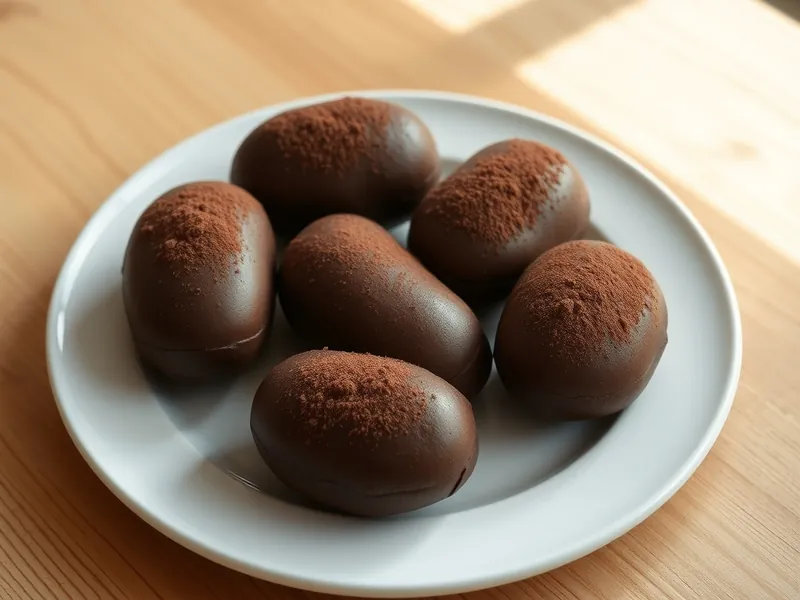

Пирожное «Картошка» из овсяных хлопьев
Шоколадные пирожные из обжаренной овсянки со сгущёнкой и какао без выпечки
90 мин6 порц.398 ккал на порциюБ 8 · Ж 24 · У 37Русская кухня
Открыть в приложении: порции, таймеры, список покупок
Продукты на 6 порц.
- Овсяные хлопья2 стак.
- Сливочное масло100 г
- Сгущённое молоко6 ст. л.
- Какао-порошок3 ст. л.
- Грецкие орехи50 г
- Ванильный сахар1 шт
Как готовить
- Обжарьте овсяные хлопья на сухой сковороде на среднем огне 6-7 минут, помешивая, до орехового запаха и лёгкой золотистости.
- Остудите хлопья 10 минут и измельчите в блендере вместе с орехами в мелкую крошку.
- Взбейте мягкое сливочное масло со сгущёнкой, ванильным сахаром и двумя ложками какао 2 минуты.
- Соедините крем с крошкой и замесите плотную массу, которая держит форму.
- Слепите 12 продолговатых пирожных и обваляйте в оставшемся какао.
- Уберите в холодильник на 1 час, чтобы пирожные затвердели.
Совет. Если масса крошится и не лепится, добавьте ложку сгущёнки, если липнет к рукам, подсыпьте немного крошки.